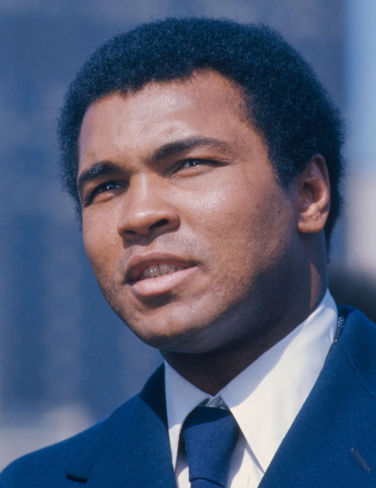

Gallery



The Greatest Boxer of All Time
Muhammad Ali (1942–2016), born Cassius Marcellus Clay Jr., was an iconic American boxer, philanthropist, and social activist. Known as "The Greatest," he captured the world’s attention with his unmatched skill, charismatic personality, and unwavering commitment to justice. A three-time heavyweight champion, Ali’s fights, like the “Rumble in the Jungle” and the “Thrilla in Manila,” are legendary. Beyond the ring, he became a global symbol of courage, standing against racial inequality, war, and oppression. His legacy endures as a champion both inside and outside the boxing ring.
"I am the greatest. I said that even before I knew I was."
"Don’t count the days; make the days count."
"He who is not courageous enough to take risks will accomplish nothing in life."
"Service to others is the rent you pay for your room here on Earth."